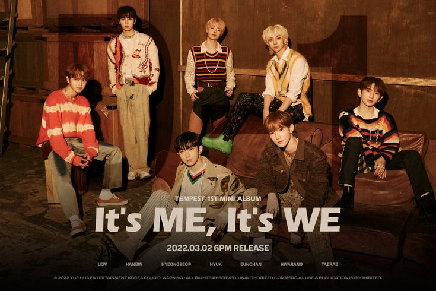
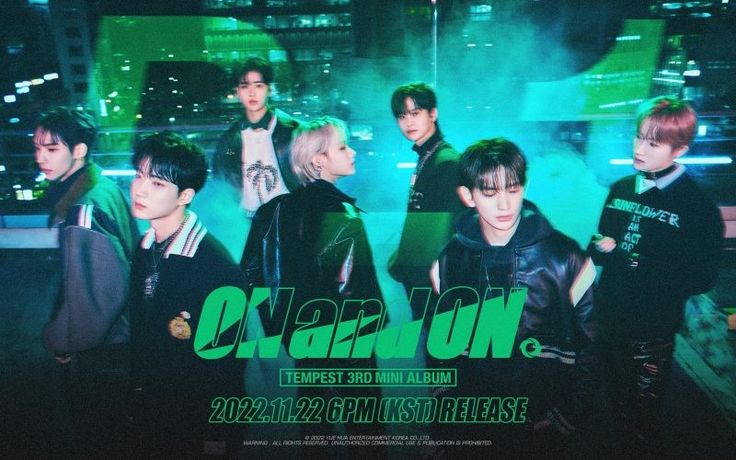

TEMPEST
Pre-Debut
El 8 de junio de 2021, Yuehua Entertainment registró oficialmente los tres nombres "TEMPEST", "TPST" y "템페스트". El 4 de octubre, Star News informó que Yuehua Entertainment debutaría con un nuevo grupo de chicos en la segunda mitad de 2021. También se indicó en el artículo que el grupo se llamaría "TEMPEST" y que Hyeong Seop y Eui Woong, quien previamente había debutado como el dúo Hyeongseop X Euiwoong, sería parte de la alineación del grupo. El 31 de diciembre, se abrieron las cuentas oficiales del grupo junto con el video animado de su logotipo y el 3 de enero de 2022, se publicaron fotos teaser de los siete miembros con la frase "WHO I AM?". El 18 de enero de 2022, lanzaron dos videos debut teaser presentando oficialmente a los integrantes Hwa Rang y Eun Chan. Anteriormente a esto, se reveló el calendario el cual incluiría el debut oficial del grupo. El 19 presentaron a LEW y a Hanbin y para terminar, el 20 se presentó a Tae Rae, Hyeong Seop y a Hyuk.

2022: Debut con su Primer Mini Álbum 'It's ME, It's WE'
El 19 de enero, TEMPEST lanzó un calendario promocional para su debut el 21 de febrero. El 8 de febrero, anunciaron que debutarían con su primer mini álbum It's ME, It's WE. Sin embargo, el 14 de febrero, se anunció que el debut del grupo se pospondrá hasta el 2 de marzo después de que los siete miembros dieron positivo por COVID-19.
Regreso con su Segundo Mini Álbum 'SHINING UP'
El 8 de Agosto de 2022, Tempest anunció a través de sus redes sociales que el grupo iba a hacer su regreso el 29 de agosto con su segundo mini álbum titulado ‘Shining Up’. Ese mismo día lanzarían el mini álbum con su pista principal llamada Can’t stop shining. El 22 de Agosto, día en el que revelaron el tracklist, mostraron cómo Hwa Rang participó en la letra de algunas de las canciones de mini álbum, entre ellas la pista principal.

Regreso con su Tercer mini álbum “ON and ON"
El 7 de noviembre, el grupo anunció su intención de volver a finales de mes con su tercer mini álbum “ON and ON”. Del 8 al 10 de noviembre se lanzaron las fotos conceptuales de los integrantes y el 11 se liberaron teasers grupales. El 14 de noviembre se publicó la lista de canciones y el 15 un teaser para su canción principal “Dragon”. El 22 de noviembre, el grupo regresó con su tercer mini álbum “ON and ON” junto con el video musical de la canción principal “Dragon (飛上)”. La canción de género trap híbrido compara los “sueños” con un dragón que se eleva hacia el cielo.
2023: Regreso su Cuarto mini álbum "The Calm Before The Storm"
El 30 de marzo, el grupo, anunció que regresarían con nueva música el próximo mes. El 31 de marzo compartió un calendario de promoción para su regreso en abril con “The Calm Before The Storm”. Del 3 al 5 de abril se liberaron las imágenes conceptuales individuales y el 6 de abril las fotos grupales. El 10 de abril se reveló la lista de canciones y el 11 un video teaser musical para “Dangerous”, su canción principal. El 16 de abril lanzaron un póster D-1 para el próximo lanzamiento. El 17 de abril se lanzó su cuarto mini álbum “The Calm Before The Storm” junto con el MV de "Dangerous". El 11 de mayo se liberó el video musical de la canción "Freak Show".

1th Single Album: Into the TEMPEST
El grupo regreso con su primer album completo titulado "Into the TEMPEST" en el cual solo se encontraban tres cancniones, el tema principal "Vroom Vroom" con un tono mas brusco al que se veia en sus trabajos anteriores. "Dive" el cual fue la segunda cancion dedicada a sus fans por todo el apoyo que le habianotrogado un grupo, con un video musical grabado por ellos mismos y estrenado en un concierto exclusivo. En la mayoria de las canciones Hwarang y LEW participaron en la letras de las canciones. Despues de eso comenzaron su primer tour de conciertos llamado T-OUR en Japon, Osaka y Corea del Sur para poder estar junto a sus fans y pasar buenos momentos junto a iE (el nombre del fandom).